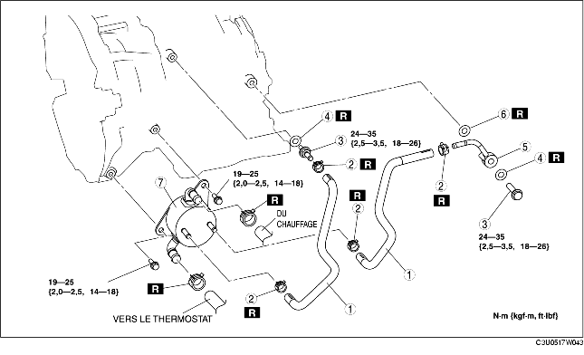

1. Déposer le conduit de batterie et le couvercle de batterie. (voir la section DEPOSE/REPOSE DE BATTERIE [LF].)
2. Débrancher le câble négatif de la batterie.
3. Déposer le composant d'épurateur d'air. (voir la section DEPOSE/REPOSE DE SYSTEME D'ADMISSION D'AIR [LF].)
4. Déposer le cache inférieur.
5. Vidanger le liquide de refroidissement moteur. (voir la section REMPLACEMENT DE LIQUIDE DE REFROIDISSEMENT MOTEUR.)
6. Vidanger l'ATF dans un récipient. (voir la section REMPLACEMENT DE LIQUIDE DE BOITE-PONT AUTOMATIQUE (ATF).)
7. Débrancher le flexible d'eau.
8. Déposer les différents éléments selon l'ordre indiqué dans le tableau.
9. Pour la repose, suivre l'ordre inverse de la dépose.
10. Remplir de liquide de refroidissement moteur. (voir la section REMPLACEMENT DE LIQUIDE DE REFROIDISSEMENT MOTEUR.)
11. S'assurer de l'absence de fuites du liquide de refroidissement moteur. (voir la section INSPECTION DE FUITES DE LIQUIDE DE REFROIDISSEMENT MOTEUR.)
12. Ajouter de l'ATF jusqu'au niveau spécifié. (voir la section REMPLACEMENT DE LIQUIDE DE BOITE-PONT AUTOMATIQUE (ATF).)
13. Inspecter s'il y a des fuites d'huile en provenance des tuyaux d'huile et des flexibles d'huile.
14. Inspecter le liquide de refroidissement en provenance des flexibles.
15. Inspecter le niveau et l'état de l'ATF. (voir la section INSPECTION DE LIQUIDE POUR BOITE-PONT AUTOMATIQUE (ATF).)
16. Effectuer le test de pression de canalisation. (voir la section ESSAI DU SYSTEME MECANIQUE.)

.
|
1
|
Flexible d'huile
|
|
2
|
Collier de flexible
|
|
3
|
Boulon de connecteur
|
|
4
|
Garniture
|
|
5
|
Tuyau d'huile
|
|
6
|
Garniture
|
|
7
|
Refroidisseur d'huile
(voir la section Note sur la repose de refroidisseur d'huile.)
|
1. Le rinçage du refroidisseur d'huile de boîte-pont automatique doit être effectué chaque fois que la boîte-pont est déposée pour une révision car le liquide existant peut être contaminé et pour éviter la contamination du liquide neuf.
2. Suivre les instructions de la notice du fabricant pour l'opération de rinçage.
1. Appliquer de l'air comprimé via l'ouverture côté refroidisseur, et chasser toute trace de poussière résiduelle et de corps étranger des tuyaux du refroidisseur. L'air comprimé doit être appliqué pendant au moins une minute.
2. Aligner les repères, et faire coulisser le flexible d'huile sur le tuyau d'huile jusqu'à ce qu'il soit complètement en place, comme indiqué.
3. Reposer le collier de flexible neuf sur le flexible.
4. Vérifier que le collier de flexible n'interfère pas avec d'autres pièces.